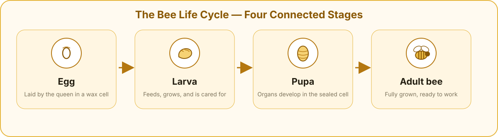
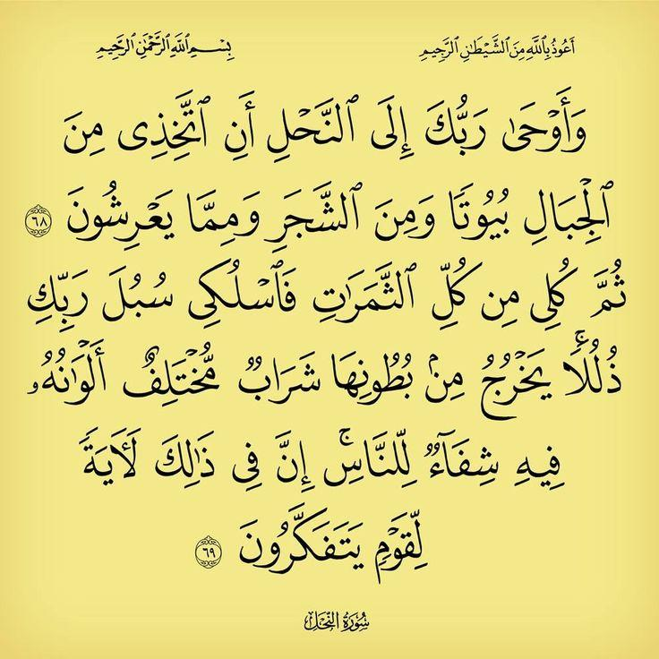
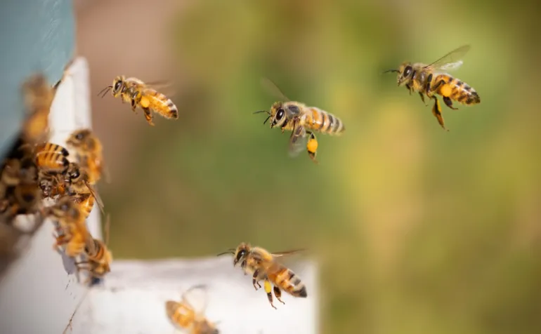
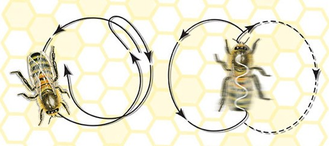

The Queen
- The main female responsible for laying eggs.
- There is usually one queen in a colony.
Small creatures with a giant role in nature
Bees don't just make honey — they help plants reproduce and keep the environment in balance. Let's discover the secrets of this amazing world together!


Bees are flying insects that belong to the order Hymenoptera. They have small bodies, wings, and hairs that help some species collect pollen.
A honey bee colony is made up of three main types, each with a clear role in the life of the hive.
A bee passes through four main stages as it grows, and its body parts develop in each one.
Life begins inside the egg laid by the queen in a wax cell.
The larva hatches, feeds and grows while worker bees care for it.
Inside the sealed wax cell, the bee's organs begin to develop.
A fully grown bee emerges to work inside and outside the hive.

Honey production goes through several precise steps — from a flower to a hexagonal wax cell.
Bees gather nectar from flowers.
They carry the nectar back to the hive.
Bee enzymes process it, and wing movement reduces its water content.
Honey is stored in hexagonal cells inside the honeycombs.
Honey is a natural food made by bees from flower nectar. It has a sweet taste and contains a range of useful compounds.
Honey contains natural sugars that give the body energy.
It may help ease coughing, especially with colds.
It contains compounds that help protect cells from oxidative stress.
It has properties that help limit the growth of some bacteria.
Medical-grade, sterilised honey is used in some dressings to help wounds heal.
The Quran says: “There is healing for people in it.”
Important note: Honey is beneficial, but it is high in sugar — enjoy it in moderation, and never give it to children under one year of age.
God Almighty mentioned bees in the Quran and devoted a whole chapter to them: Surah An-Nahl, the sixteenth chapter.

It was given this name because bees are mentioned in it and because their creation shows signs of God's power. The verses invite us to reflect on the precision of the bee's creation, its way of life and its benefits, so we recognise the greatness of God's blessings and care for His creatures.
The meanings can be grouped into four clear ideas:
“Take for yourselves dwellings in the mountains, in the trees, and in what they build” — God guides bees to make homes in mountains, trees and human-made places.
“Then eat of all the fruits” — a reference to their food and dependence on flowers and fruits.
“From their bellies comes a drink of varying colours” — a drink that comes from bees, whose colours vary with the nectar sources.
“Therein is healing for people” — showing the benefits and useful properties God placed in honey.
Bees are among nature's most important pollinators. Without them, many fruits would disappear and whole food chains would be disrupted.
They carry pollen between flowers, helping them produce fruit and seeds.
They support flowers and plants that other living creatures depend on.
They keep the natural cycle of life going in gardens and the wild.
Many fruits and crops rely on bee pollination to grow.
Small facts that reveal just how remarkable this creature is.

A bee has two compound eyes and three simple eyes that help it sense light.

A bee can fly at speeds of around 24 kilometres per hour.
Workers keep the hive close to 35°C to raise the young.

A returning bee dances to tell its sisters where nectar is and how far away.
When stored properly, honey can stay usable for a very long time.

A queen can lay thousands of eggs a day during the active season.
Each of us can help protect bees with simple everyday steps.
Grow flowers and plants that attract bees and provide nectar.
Protect gardens and green areas in your city.
Don't use pesticides carelessly — they harm bees.
Preserve the natural environments where bees live.
On our journey we met the world of bees, learned how they live, and saw their vital role in pollinating plants and producing honey. Let us always remember: protecting bees means helping protect nature and its balance.
As our journey into the world of bees ends, we discover that this small creature carries great secrets, and that in its creation lies a sign of the Creator's greatness and artistry. The Quran invites us to reflect on bees and the benefits they bring, so that we recognise the magnitude of God's blessings and strive to care for His creation.
Three quick questions — pick the correct answer.
You've completed your journey into the world of bees and discovered the wonders of a tiny creature full of marvellous secrets 🐝
Your score: 0 / 3